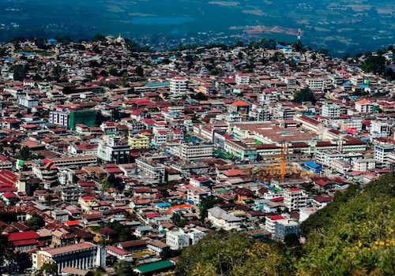
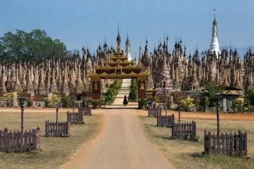
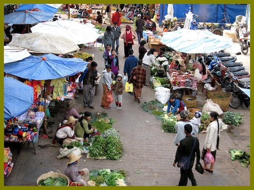
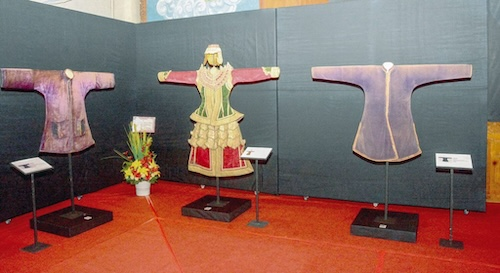

Charming Taunggyi
Taunggyi Viewpoint
The Taunggyi Viewpoint offers a stunning panoramic view of the surrounding mountains and valleys. It’s a popular spot for both locals and tourists to take in the breathtaking scenery, especially during the cool mornings and evenings. The view of the city below and the distant hills makes for an unforgettable experience.
Kakku Pagodas
The Kakku Pagodas are a cluster of over 2,000 ancient stupas, located about an hour’s drive from Taunggyi. The pagodas, many of which are beautifully adorned with intricate carvings and decorations, are hidden away in a remote area, making them a peaceful and awe-inspiring site for visitors to explore.
Taunggyi Market
he Taunggyi Market is a bustling local market where visitors can experience the culture and daily life of the Shan people. The market is known for its wide array of local produce, Shan handicrafts, clothing, and fresh ingredients. It’s the perfect place to shop for souvenirs and try traditional snacks.
Hot Air Balloon Ride
Taunggyi offers hot air balloon rides that allow visitors to enjoy an aerial view of the picturesque countryside and the stunning landscape. Floating over the valleys and villages gives a unique perspective of the region, and it's an exciting way to see the beauty of the area from above.
Shan Cultural Museum
he Shan Cultural Museum in Taunggyi is dedicated to preserving and showcasing the rich heritage of the Shan people. It features a collection of traditional clothing, tools, and artifacts that give visitors an insight into the local culture, history, and customs of the Shan State.